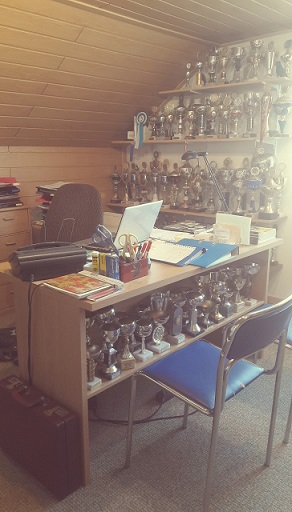
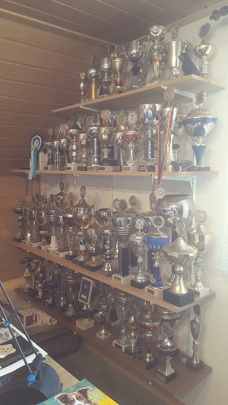

Rottweiler-Zwinger “Vom heiligen Häuschen”

[das “heilige Häuschen” in Wiesoppenheim]
Durch die unmittelbare Nähe meines Wohnortes zu dieser Kapelle im rheinhessischen Wiesoppenheim bei Worms, entschied ich mich, meinen Zwinger danach zu benennen.
Bereits seit dem 7. Lebensjahr bin ich mit Hunden aufgewachsen. Kein Wunder, dass Rottweiler mich seither mein Leben lang begleiten.
Seit 1983 bin ich Mitglied im IRV und züchte diese Hunderasse.
Von 1990-1996 war ich Ausbildungsleiter in einer Hundeschule und habe auch im Bereich des Hundesports Erfolge vorzuweisen. Viele Hunde wurden für Leistungsprüfungen ausgebildet und geführt, unter anderem 2x zum Landesmeister.
Seit 1983 züchte ich unter dem Zwingernamen “Vom heiligen Häuschen”.
Unser Zuchtziel ist es den gesunden, wesensfesten, umgänglichen und familienfreundlichen Rottweiler zu züchten.
Neben den HD-und ED-Untersuchungen erfolgen noch zusätzliche Untersuchungen auf das IVDD-Risiko, DM Exon 2, HUU/SLC, JLPP, LEMP, MH, NAD und XL-MTM.
Daneben sind unsere Hunde geimpft (EU-Heimtierausweis), gechipt und entwurmt.
Unsere Welpen sind bei der Abgabe mind. acht Wochen alt, 2 x geimpft (EU-Heimtierausweis), gechipt, mehrfach entwurmt und hatten zwei tierärztliche Untersuchungen. Als Käufer erhalten Sie für den Anfang ein kleines kostenloses Starter Paket von uns.
Desweiteren habe ich den Sachkundenachweis nach § 11 Tierschutzgesetz erworben.
 |
 |
Besonderen Wert lege ich auf eine liebevolle, familiäre Aufzucht der Welpen. Während dieser Prägezeit werden schließlich die Grundsteine für das spätere Verhalten gelegt.

Wenn sie Interesse an Rottweilern haben, können Sie mich gerne unverbindlich ansprechen. Gerne beantworte ich Ihre Fragen.